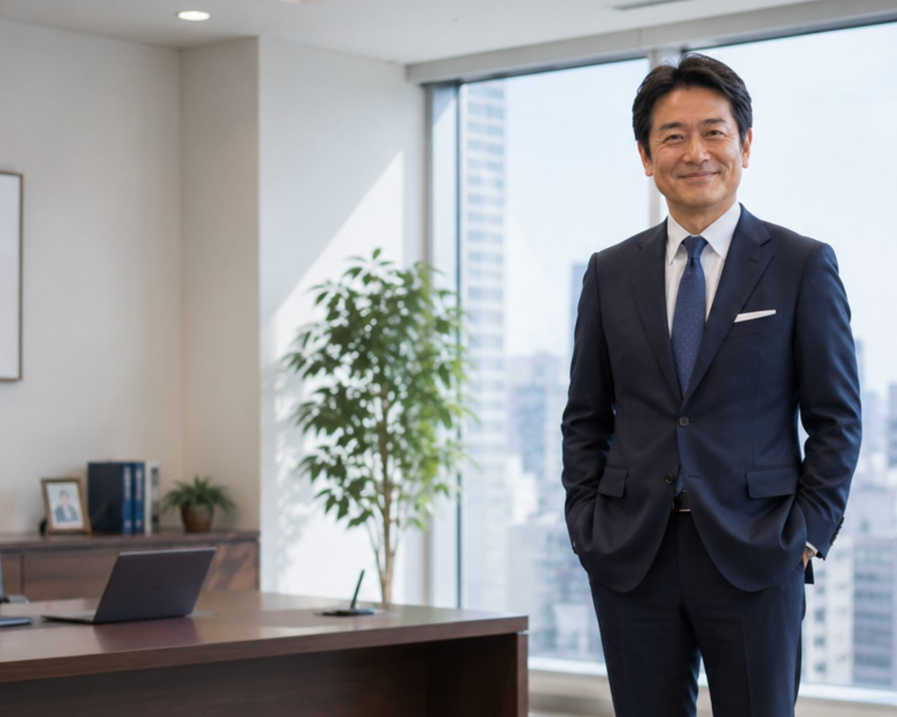

FUTURE DEMOCRATIC PARTY ／ 結党2023
党代表
東雲 涼介
POLICY ／ 政策の5本柱
次の世代のために、
いま決めること。
ABOUT ／ 未来民主党について
変えるのは、政治のかたち。
日本の政治は、まだ昭和のままです。決め方も、伝え方も、参加のしかたも。未来民主党は、開かれた対話とテクノロジーの力で、一人ひとりの声が届く仕組みをつくります。
MESSAGE ／ 代表挨拶
”
政治とは、遠い誰かが決めることではなく、私たち自身で選びとるものです。この国の「次の朝」を、一緒につくりましょう。
東雲 涼介（しののめ りょうすけ）
未来民主党 代表
1981年生まれ。地方議員、IT企業の経営を経て、2023年に未来民主党を結党。「対話から始める政治」を掲げ、全国で対話集会を続けている。
MEMBERS ／ 所属議員検索
あなたの街の議員を、探す。
名前や役職から、未来民主党の所属議員を検索できます。
JOIN US
国民が作る、次の未来を。
未来民主党の活動は、一人ひとりの参加で支えられています。あなたにできる関わり方を選んでください。